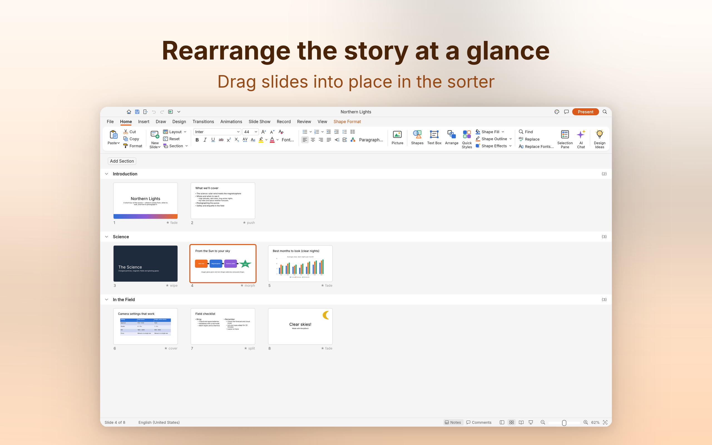
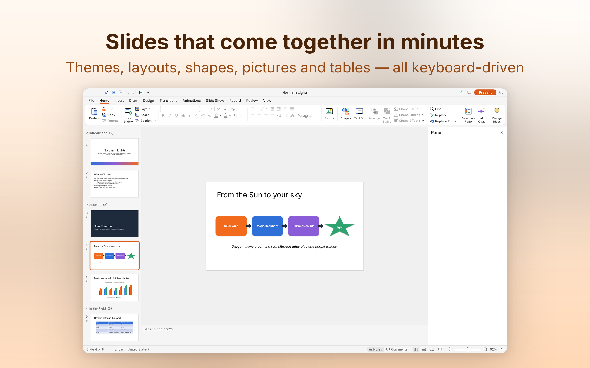
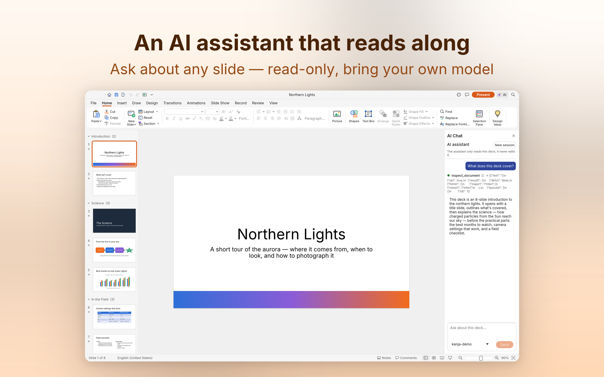
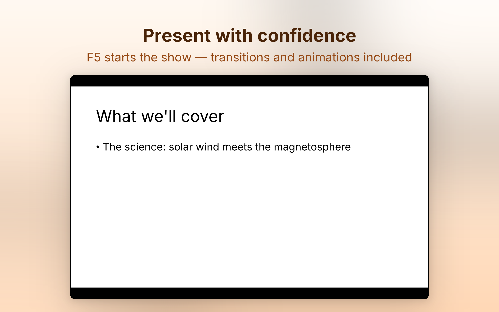
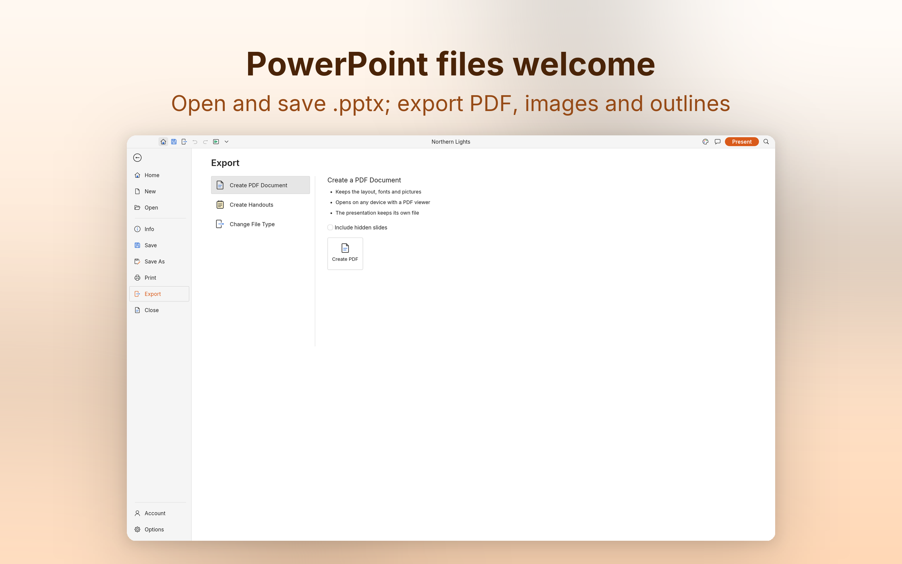

ステップ 01 · 作成
スライドは数分で仕上がる
テーマとスライドレイアウトから始めるか、すべてを継承するスライドマスターとプレースホルダーを。セクション付きの本格的なスライド一覧、150+ のプリセット図形、表とグラフ、そして全体をキーボード操作で。夜の作業には完全なダークテーマも。

KenjaDeck は高速でオープンな Mac 用プレゼンテーションアプリ——テーマ、レイアウト、 図形、グラフ、PowerPoint ファイル、全画面スライドショーに加え、スライドについて質問に答える 読み取り専用 AI アシスタントを内蔵しています。プライバシーはデフォルトで保護: 収集も追跡も一切ありません。

作って、尋ねて、発表して、共有する——ひとつの静かなネイティブアプリで。
テーマとスライドレイアウトから始めるか、すべてを継承するスライドマスターとプレースホルダーを。セクション付きの本格的なスライド一覧、150+ のプリセット図形、表とグラフ、そして全体をキーボード操作で。夜の作業には完全なダークテーマも。

AI ペインを開いてスライドについて質問すると、実際に検査した内容からだけ答えます。読み取りのたびに跡が一行ずつ表示される仕組み。設計上、読み取り専用:編集・保存・ファイルを閉じることは決してありません。モデルは持ち込み制:任意の OpenAI 互換エンドポイントを使い、キーはあなたの Mac の中だけ。設定しなくても全機能が使えます。

F5 で最初から、Shift+F5 で現在のスライドから再生。Morph を含む切り替え、開始・強調・終了とモーションパスのアニメーション、段落ごとの構築にライブプレビュー。本番では発表者ツール、ペン、リハーサルタイマー、メディア再生。

.pptx プレゼンテーション(.potx テンプレートと .ppsx スライドショーも)を開いて、そのまま保存。必要ならネイティブの .kenjadeck 形式を。PDF 書き出し(スライド、ノート、テキストを選択できる配布資料)、PNG/JPEG 画像、プレーンテキストのアウトラインにも対応。AutoRecover が未保存の作業を守ります。

クラウドのダッシュボードではなく、あなたの発表に真剣に向き合う小さなネイティブアプリ。
調整ハンドル、移動しても吸着し続けるコネクタ、フリーフォーム・曲線・スケッチツール、図形の合体——グラデーション・画像・パターンの塗り、破線、矢印、影、グローと組み合わせられます。
その場で編集、完全なフォントと段落の書式:箇条書きと段落番号、段組み、自動調整、縦書き、フィールド、ハイパーリンク——発表にふさわしいタイポグラフィを。
スタイル付きの表、会場の後ろまで読めるグラフ、MP3・AAC・FLAC などの再生——H.264、HEVC、VP9、AV1 の動画にも対応。
アシスタントは何でも見られます——スライドの概要、内容、レンダリング画像——けれど何も触りません。4 つの検査ツール、読み取りごとの一行の跡、会話はメモリ上だけ。あなたのモデル、あなたのキー、あなたの Mac。
すべての操作は安定した ID と取り消しを持つコマンド——CLI・JSON 制御チャネル・MCP サーバーから同じ動詞で駆動でき、人もスクリプトも AI エージェントも同じ言葉で語ります。
エディタも一覧もペインも、完全なダークテーマ——深夜のスライド作りでもまぶしくない。もちろん、日が出ていればライトテーマで。
KenjaDeck は良い道具らしく働きます——あなたのマシンで仕事をし、誰とも話しません。スライドがアップロードされることはなく、ネットワークを使うのはあなたが設定した任意の AI チャットだけで、指定したエンドポイントへ直接届きます。サインインするものも、漏えいしうるものも、何もありません。
いいえ。作成・編集・レンダリング・書き出し・発表はすべてお客様の Mac 上でローカルに実行されます。アプリ自身はネットワーク通信を一切開始しません。送信される唯一の通信は、お客様が実行した AI チャットのリクエストで、お客様が設定したエンドポイントへ直接送られます。App Store のプライバシーラベルは「データ収集なし」です。
いいえ。アシスタントは設計上、読み取り専用です。4 つの検査ツール——スライド全体の概要、スライドの内容、レンダリング画像、コマンドカタログ——だけを使って質問に答え、読み取りのたびにその跡が一行で表示されます。編集・保存・ファイルを閉じることは決してなく、会話はメモリ上にのみ存在します。
お客様が設定した任意の OpenAI 互換エンドポイント:OpenAI、DeepSeek、Qwen、あるいは Ollama・LM Studio などのローカルサーバーです。API キーはお客様の Mac に保存され、メッセージを送るときにだけ、設定したベース URL へ送られます。AI を設定しなくても全機能が使えます。
はい。.pptx プレゼンテーション(.potx テンプレートと .ppsx スライドショーも)を開き、そのまま保存できます。ネイティブの .kenjadeck 形式もあり、PDF(スライド、ノート、テキストを選択できる配布資料)、PNG/JPEG 画像、プレーンテキストのアウトラインを書き出せます。
はい。Morph を含む切り替え、開始・強調・終了とモーションパスのアニメーション、段落ごとの構築にライブプレビュー付きで対応します。発表では全画面スライドショー、発表者ツール、ペン、リハーサルタイマー、メディア再生が使えます。
KenjaDeck は macOS 26 以降の Apple シリコン搭載 Mac で動作します。